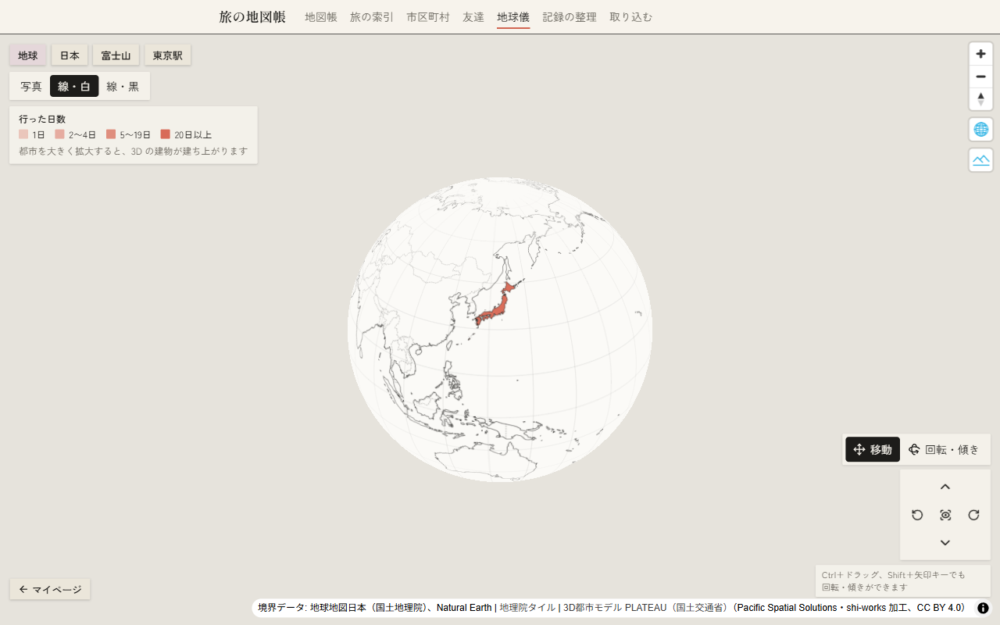
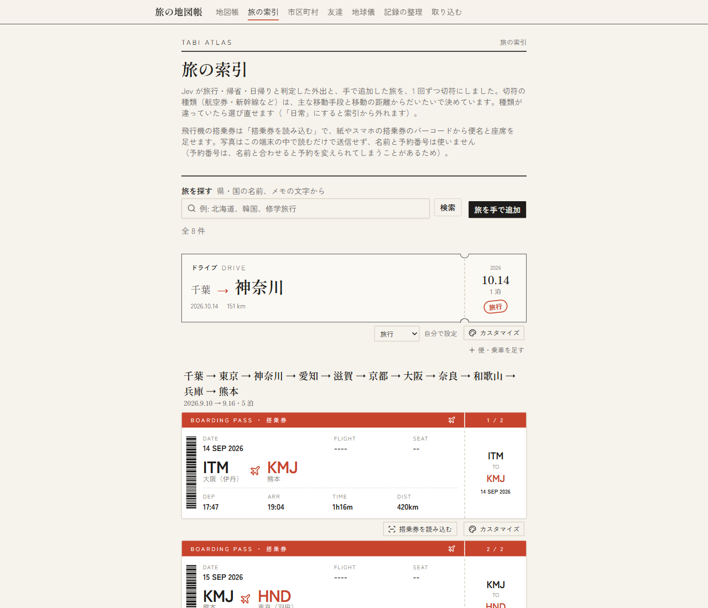
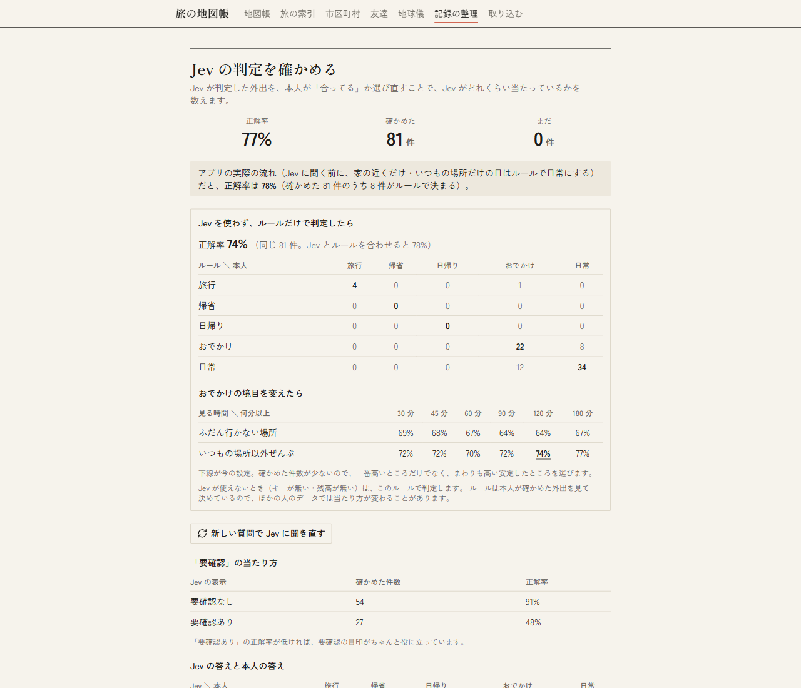
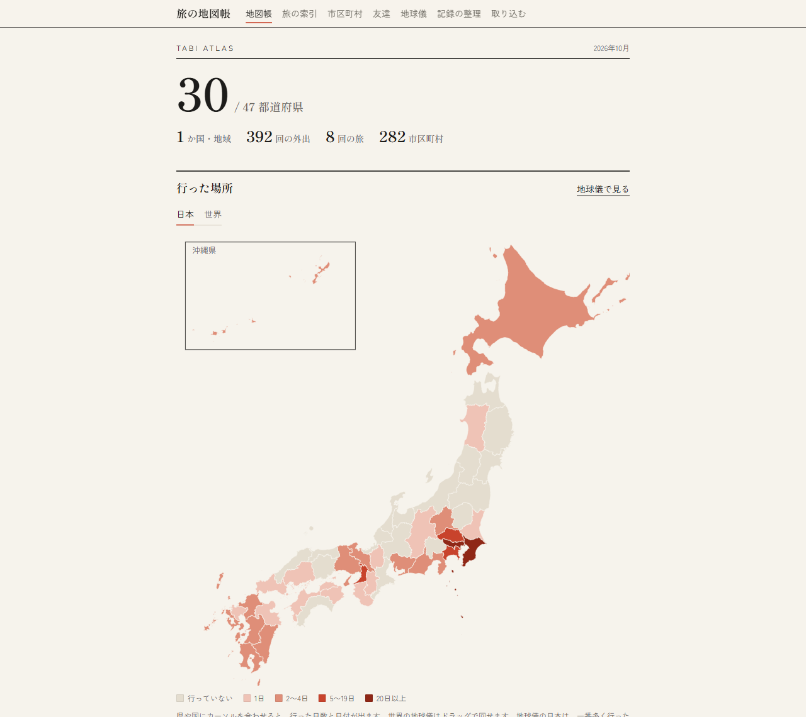
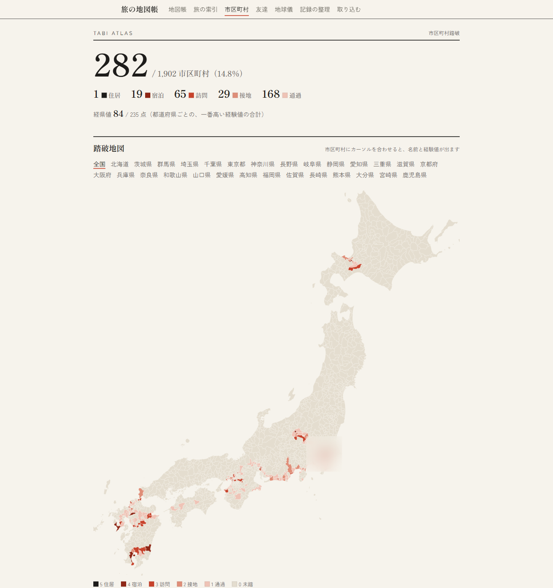
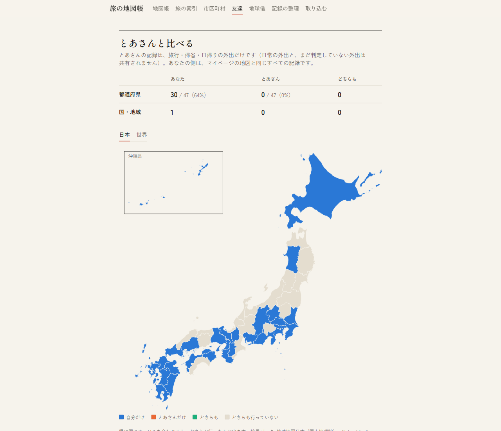
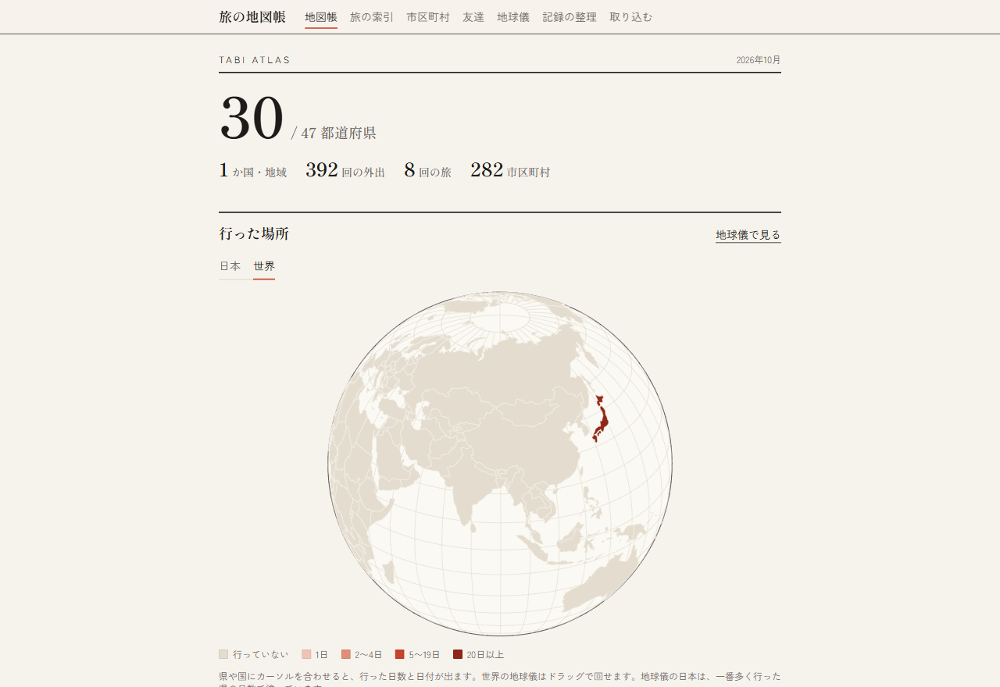
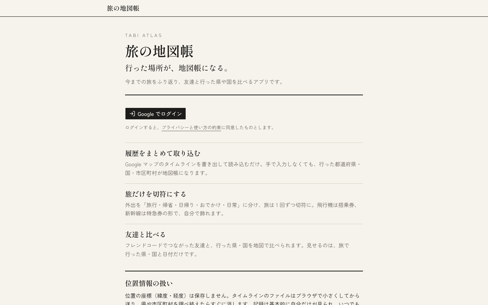

旅の地図帳
外出を旅と日常に、LLMでどこまで仕分けられるか。
Googleマップのタイムラインから旅をふり返るアプリを作っていて、外出を1回ずつ仕分ける部分にLLMの判定器Jev（TypeSafe AI）を使ってみました。このページは、アプリの紹介というより正解率を上げるために何を試して、何がうまくいって、何がダメだったかと、Jevがほかに何に使えそうかをまとめた記録です。

先に結論
- 正解率だけ見ると、Jevとコードのルールはほぼ互角でした。どちらも、自分の答えのぶれ（81%）に近いところまで来ています。
- Jevが一番役に立ったのは、正解率よりも迷っている外出に要確認を付けてくれることでした。要確認なしなら91%当たり、ありだと48%。要確認の3分の1だけ見直せば、外れの7割が拾えます。
- 一番の失敗は、あいまいな境目に、自分が言ってもいない数字の線を引いたこと。これだけで75% → 58%まで落ちました。
やりたかったこと
タイムラインを取り込むと、外出が数百回ぶんたまります。それを1回ずつ、旅行・帰省・日帰り・おでかけ・日常の5つに分けて、日常以外だけを旅の一覧や地図、友達との比較に出したい。ここが出発点でした。
やってみると案外難しくて、同じ東京でも学校に行った日と遊びに行った日があり、同じ2時間の外出でも、病院と買い物では意味がまったく違います。距離や泊数だけでは決めきれないので、この判断をLLMに任せられないか試してみました。

Jevの使い方の土台
Jevは、質問に対して選択肢や はい／いいえ を、確率つきで返してくれる判定器です。最初に、2つだけ方針を決めました。
計算はコード、判断だけJev
Jevは計算が苦手なので、泊数・距離・その場所に何日行ったか・どこに何分いたか、のような数えられるものは全部コードで先に数えて、日本語のJSONにしてから渡しています。座標そのものは保存も送信もしていません。
いつもの場所を数字にする
都道府県だけだと、東京の学校と東京で遊んだ日が区別できません。そこで履歴全体から、10日以上行った場所をいつもの場所、4〜9日をときどき、3日以下をふだん行かないに分けて、それぞれに何分いたかを材料にしました。ふだん行かない場所にほとんどいない日は、Jevに聞かずにコードで日常と決めます。通学の日がほとんどなので、これだけで聞く回数が大きく減りました。
正解率を上げる試行錯誤
自分の外出に自分で正解を付けて、Jevとルールの答えと見比べながら、1つずつ変えていきました。
1. 4択をやめて、はい／いいえ3問に
最初は4つの中から1度に選ばせていましたが、並び順で答えが偏ることがありました。これは日常か？ のように1つずつ聞く形に変えたら、確率が実際とよく合うようになりました。泊まったかどうかは、聞くまでもないのでコードで分けています。
日常か？（Jev）── はい → 日常 │いいえ 泊まったか？（コード）── いいえ → 遠くへの日帰りか？（Jev）── はい → 日帰り ／ いいえ → おでかけ │はい 帰省か？（Jev）── はい → 帰省 ／ いいえ → 旅行
2. 質問の書き方を変えて、同じ57件で比べる
| 版 | 変えたこと | 正解率 |
|---|---|---|
| v1 | 最初の はい／いいえ 版 | 75% |
| v2 | いつもの場所以外に合計1時間以上いたら日常ではない、と数字の線を書いた | 58% |
| v3 | v2をやめて、v1に自宅の近くの用事は日常、とだけ足した | 77% |
v2では、正解率が58%まで下がりました。理由を考えると、たぶんJevは書かれた基準をそのまま守るからです。乗り換えの駅や友達の家を足すとすぐに1時間を超えてしまい、ふつうの日まで日常ではない扱いになっていました。確率もずれていて、日常ではないと予想した外出（日常の確率0〜20%）のうち36%が、実際は日常でした。そもそもその1時間は自分の言葉ではなく、自分の話を勝手に数字に置き換えたものでした。今回いちばんの発見は、ここだったと思います。
教訓：あいまいな境目に、本人が言っていない数字の線は引かない。基準は本人の言葉のまま渡して、変えたら必ず前後で比べる。
3. 質問を作るときに見ていない外出でも試す
確かめる外出を81件に増やすと、正解率は80%（ルールも入れると81%）。新しく足した24件だけなら88%で、作るときに見ていなかった外出でもちゃんと当たっていました。
4. 保存した確率で、日常の境目を調整する
Jevに聞き直さなくても、保存しておいた確率から境目だけ動かして計算できます。
| 日常とみなす確率 | 30% | 35% | 40% | 45% | 50% | 60% |
|---|---|---|---|---|---|---|
| 正解率 | 79% | 80% | 84% | 84% | 81% | 74% |
40%と45%で同じ数字が出て安定していたので、45%にしました。ここでJev込み84%。
5. Jevを使わない、ルールだけの判定も作る
アプリを公開すると、ほかの人はJevを使えないのでルールで判定することになります。なので同じ材料で、ルールだけの判定も作りました。いつもの場所以外に120分以上いたらおでかけ、のような境目を選ぶと、ルールだけで83%。Jev込みの84%とほぼ同じで、驚きました。
6. 正解を付け直したら、数字が下がった
自分の答えが本当に合っているのか気になって、1回目の答えを見ないで同じ81件を付け直してみました。すると81件中15件（19%）で、自分の答えが変わっていました。ほとんどがおでかけと日常の境目です。迷った日は、その日の目的が用事なら日常、遊びならおでかけ、と基準を言葉にして決め直しました。
| 判定のしかた | 1回目の答えで | 2回目の答えで | Jevに聞く外出 |
|---|---|---|---|
| ルールだけ | 83% | 74% | 0件 |
| Jevだけ | 80% | 77% | 81件 |
| アプリの流れ（家の近くだけの日はコードで日常、ほかはJev） | 84% | 78% | 73件 |
| ふだんはルール、おでかけと日常の境目だけJev | 84% | 78% | 38件 |
| Jevが迷っていない（要確認なし）ときだけJev、ほかはルール | 84% | 80% | 81件 |
一番下がったのはルールでした（83% → 74%）。ルールの境目は1回目の答えに合わせて選んでいたので、答えが変わったぶん、そのまま外れました。Jevのほうは基準を言葉で渡しているだけで数字を答えに寄せていないので、下がり方が小さく済みました。
7. 交差検証で、甘かった数字を直す
境目を選んだのと同じデータで測ると、そのデータにたまたま合う境目を選んでいるぶん、どうしても数字が良く出ます。4/5で境目を選んで残り1/5で測る、を50回くり返すと、2回目の答えでのルールの正解率は平均75%（69〜77%）。最初に言っていた83%は、甘い数字でした。
8. どこで外れるのかを見る
| 外れ方 | 例 |
|---|---|
| 泊まりのおでかけ | ネカフェで夜通し遊ぶ、友達の家に泊まる。今のしくみだと泊まった時点で帰省か旅行にしかならないので、ルールもJevも当てられない（7件。ここで上限が91%になる） |
| 用事か遊びか | 通院や書類を取りに行く日も、いつもと違う場所に長くいるので、おでかけに見えてしまう |
| 家の近くの寄り道 | 近所の新しいお店に少し寄っただけの日を、Jevは高い確率でおでかけと答える |
| 何度も行く場所 | 何度も行く街は、ときどき行く場所になる。そこでルールとJevが同じ数字を反対に読む |
| 記録の区切り | 一度帰ったのに、記録の上では2つの外出が1つにつながっていた |
真ん中の3つは、その場所が病院なのか、お店なのか、友達の家なのかが分かれば、見分けやすくなります。ただ、プライバシーのために場所の名前や種類はJevに渡していません。正解率と個人情報のバランスのところで、今は止まっています。
試行錯誤でわかったこと
- 数えられることは、コードのほうが強い。距離・泊数・滞在時間はコードで計算して渡すほうが、速いし確実だし、お金もかかりません。
- 基準は言葉で。勝手に数字の線を引かない。LLMは書かれた線をそのまま守るので、基準がずれていると、高い確率のまま間違えます。
- 正解そのものもぶれる。自分の答えでも2回で19%変わりました。正解率は、人どうしの一致と並べて読むのが正直です。迷う境目では、しくみを賢くするより、自分の基準を言葉にして答えをそろえるほうが効きました。
- 基準を決めたデータと、測るデータは分ける。同じデータで決めて測ると、数字はどうしても良く見えます。
それでもJevに価値があるところ
正解率だけなら、ルールと互角です。それでも、ルールにはできないことが2つありました。
迷っている、と言える
| Jevの表示 | 件数 | 正解率 |
|---|---|---|
| 要確認なし | 54件 | 91% |
| 要確認あり | 27件 | 48% |
要確認の27件だけ見直せば、Jevの外れ19件のうち14件を拾えます。全部見直すより3分の1の手間で、外れの7割です。自分が付け直しで迷った日（ネカフェの泊まりとか、成人式と同窓会とか）にも、だいたい要確認が付いていました。ルールは白か黒かしか出せないので、ここはJevならではだと思います。
確率がだいたい現実と合う
| Jevが言った日常の確率 | 件数 | 実際に日常だった割合 |
|---|---|---|
| 0〜20% | 17件 | 0% |
| 20〜40% | 17件 | 24% |
| 40〜60% | 12件 | 42% |
| 60〜80% | 19件 | 89% |
| 80〜100% | 16件 | 100% |
高めの確率は実際より少し控えめですが、どのくらい信じていいかの目安としては十分使えます。ただし、迷いの印で拾えるのは迷っている外れだけ。家の近くの寄り道を、高い確率のまま外した例も2件ありました。

Jevがほかに使えそうなこと
ここからは、今回の結果から考えたアイデアです。まだ試していない推測なので、上の結果とは分けて読んでください。
ルールで速く、境目だけLLM
ふだんはコードのルールで決めて、ルールが迷う境目だけJevに聞く。今回の保存した答えで計算すると、正解率はJevだけと同じくらい（78%）のまま、Jevに聞く回数は半分以下（38件）でした。正解率を上げる手というより、料金と待ち時間を減らす手として使えそうです。
人が見直すものを選ぶ係
判定そのものを任せるのではなく、人が確かめるべきものを選ぶのに、Jevの迷い（要確認）を使う。今回なら3分の1の手間で外れの7割です。人のチェックが必要な仕事ほど、効き目が大きいと思います。
向いていそうな仕分け
白黒つけにくくて、間違いを人が確かめたい仕分けには、はい／いいえ＋確率が向いていると思います。
| 場面 | Jevに聞くこと（はい／いいえ） | コードで先に数えること | 迷ったときは |
|---|---|---|---|
| 授業のレビュー | 具体的な中身があるか／先生への悪口になっていないか | 文字数、同じ人の投稿数 | 運営が確かめてから載せる |
| 学生のイベント・お知らせ | この人に関係あるか（興味・学年から） | 授業と時間がかぶるか | 一覧には出すが、通知はしない |
| 質問の掲示板 | 住まい・ビザ・授業などのどの話か | 似た過去の質問の数 | 全体に出す |
| 問い合わせ | 急ぎか | 受け付けからの時間 | 担当者が先に見る |
| メール | 返信が必要か | 相手とのやりとりの回数 | あとで見るに入れる |
| 写真 | 人に見せてよいか（顔・住所が写っていないか） | 撮った場所が自宅の近くか | 本人に確かめる |
ゲームを作る側：CPUとプロの練習相手
ゲームを作る側から見ると、CPU（コンピューターの対戦相手）がかなり強くなりそうだと思いました。ただ、速さを出すのはLLMではありません。LLMは1回答えるのに時間がかかるので、人の反応（0.2秒くらい）より遅くなりがちです。画面の読み取りと操作はコードで速く、Jevには数秒に1回、今は攻めるべきか？ この相手は危ないか？ のような判断だけを聞く。この分け方なら、反応が速くて判断もうまいCPUが作れるかもしれません。確率が低いときは無理をしない、のような動きもさせられます。
そこまで強くなれば、プロゲーマーの練習相手にもなります。人と違って、いつでも、同じ強さで、苦手な場面だけを何回でも相手にできます。オセロや将棋でAIが人を超えたのように、いつかFPSでもCPUが人に勝つ日が来るかもしれません。
画像の認識と組み合わせる：じゃんけん
前に、高速カメラで相手の手の動きを見て必ず勝つじゃんけんロボットが話題になりました。今ならブラウザのカメラと、手の形を読み取るライブラリで、似たものを自分でも作れそうです。
ここでも分け方は同じで、グー・チョキ・パーを読むのは画像処理のコードで速くやります。Jevに向いているのは、その手前のこの人は次にグーを出しそうか？のような予想のほう。これまでの出し方のクセを材料に、確率つきで答えてもらいます。確率が高ければ先に構えて、低ければ手の形が見えるまで待つ、という使い方ができます。
人によって正解が違う仕事
今回、自分の答えでさえ2回で19%変わりました。人によって基準が違う仕分けなら、本人の基準を言葉で持たせて、本人が直したら次から反映する、というしくみが合っていそうです。数字の線で合わせると、答えが変わったときに一気に外れます（ルールが83%から74%に落ちたのように）。
使うときのチェックリスト
- 数えられることは、コードで数えてから渡す
- 基準は言葉で書く。自分が言っていない数字の線は引かない
- 選択肢を並べるより、これは◯◯か？ と1つずつ聞く
- 確率は、答えそのものより、人が見直す目印に使う
- 正解を2回付けて、人どうしの一致も測っておく（それが正解率の天井の目安になる）
- 基準を決めたデータと、測るデータを分ける
これから
- 泊まっていても、遠くへ出かけたか？ を聞いて、近場ならおでかけにできるようにする（上限の91%を外したい）
- 友達に自分のアカウントで判定を確かめてもらって、自分以外のデータでも正解率を測る（データはもらわず、正解率の画面だけ見せてもらう）
- 帰省・日帰りの外出も確かめる（今回のデータには1件もなかった）
アプリの画面
タイムラインを読み込むだけで、行った都道府県・国・市区町村が地図にまとまり、旅は1回ずつ切符になり、フレンドコードでつながった友達と行った県を比べられます。位置の座標は保存せず、データベースの全部の表に行単位のアクセス制御（RLS）をかけています。





使った技術と、どう使ったか
技術の指定はありましたが、それぞれ何と組み合わせて、どんなコードを書いたかをまとめておきます。
Next.js 16（App Router・Server Actions）＋React 19
アプリ全体の画面と、サーバー側の処理
- ページはサーバーでSupabaseからデータを読んで組み立て、地図や切符の操作のように動きがある所だけクライアントのコンポーネントにしました。
- 取り込みは、Timeline.jsonをブラウザの中で読んで、必要な部分（外出の区切りと軌跡）だけにしてからServer Action（
app/import/actions.ts）に送ります。ファイルを丸ごとサーバーに送らないので、軽くて、余計な位置情報も持たずに済みます。 - 旅の追加・友達の申請・判定のやり直しなどもServer Actionにしていて、画面からはふつうの関数のように呼べます。
- ログインのセッションは
proxy.ts（Next.js 16でmiddlewareから名前が変わった所）で毎回更新しています。
TypeScript＋Zod＋react-hook-form
データの形のチェックと、入力フォーム
- Timeline.jsonはiPhoneとAndroidで形が違うので、Zodで両方の形を定義して読み分けています（
lib/timeline/parse.ts）。形が合わないファイルは、取り込む前に止めます。 - 昔の旅を手で追加するフォームや友達の申請は、react-hook-formとZodで入力を確かめています。
- データベースの型はSupabaseから生成した型を使っていて、テーブルを変えるとTypeScriptがずれを教えてくれます。
Supabase（PostgreSQL・Auth・RLS）＋Googleログイン
データの保存と、ログイン、だれが何を見られるか
- Googleでログインして、外出・行った県・市区町村・旅・友達などを9つの表に保存しています。表の変更は
supabase/migrations/のSQLで管理しています。 - 9つの表すべてに行単位のアクセス制御（RLS）をかけて、自分のデータは自分だけ、友達には旅で行った県・国だけが見えるようにしました。コードを間違えても、データベースの側で止まります。
- 正解率の検証のためにデータを取り出すSQLは、本物のデータベースで動かす前に、同じ構成にしたPGlite（手元で動くPostgreSQL）で流して、自分の分だけが取れることを確かめました。
Jev（TypeSafe AI）＋ コードのルール
外出の仕分け（このページの主役）
- 公式のSDK（
@typesafe-ai/sdk）で、はい／いいえ の質問を3つ定義しています（lib/jev/classify.ts）。答えの形はZodで決めてあるので、返ってくる値がずれません。 - Jevに渡す材料はコードで作っています（
lib/jev/state.ts）。泊数・距離・移動手段・時期・いつもの場所の滞在時間などを日本語のJSONにしたものです。 - 3つの答えから5つのどれかを決めるのは
lib/jev/decide.ts、Jevを使えないときのルールはlib/outings/rule-judge.tsです。 - APIキーはサーバーだけで読み（
server-only）、Jevを使えるのは自分のアカウントだけにしています。結果は確率ごと保存しておいて、同じ外出で何度もJevを呼ばないようにしました。
TopoJSON＋Turf＋SVGの地図
緯度経度から県・市区町村を割り出す所と、2Dの地図
- 国土地理院や国土数値情報の境界データをTopoJSONにして持っておき、外部のAPIを使わずに、Turfで緯度経度がどの県・市区町村に入るかを調べています（
lib/geo/municipalities.ts）。 - 市区町村は、住居・宿泊・訪問・接地・通過の5段階で塗り分けます。新幹線のように速い移動では点と点の間が空くので、50kmまでは直線で補うようにしました。同じ点から、立ち寄らずに通っただけの県も、行った県に数えるようにしています。
- 日本地図と世界地図、友達との比較の地図はSVGで描いています。
MapLibre GL JS＋ 地理院タイル ＋PLATEAU
3Dの地球儀（/map3d）
- 地球儀から日本、山、街の建物まで、つなげて拡大していけるようにしました。地理院の標高タイルをMapLibreで使える形に変換して、山を立体にしています（
app/map3d/gsi-dem.ts）。 - 建物はPLATEAUの3D都市モデルをPMTilesで読み込んでいます。APIキーはいりません。
- 遠くでは線だけのモノクロの地球儀（行った国だけ朱）、近づくと建物が建ち上がる、という見た目の切り替えも付けました。
Tailwind CSS 4＋shadcn/ui
見た目
- 紙・墨・朱の3色と、明朝の見出しを決まりにして、地図帳っぽい見た目にそろえました。旅は乗り物ごとの切符（飛行機は搭乗券、新幹線は特急券）にしています。
- 搭乗券のバーコードは、写真をスマホの中だけで読み取って（ZXing）、便名や座席を足せるようにしました。名前と予約番号は使わず、送信もしません。
Biome＋Playwright
品質
- コードの書き方と整形はBiomeでそろえています。
- Playwrightで、計算のテスト（判定の流れ・いつもの場所・市区町村・正解率など67本）と、画面のテスト（ログインしていないと入れないことなど）を書きました。本物のデータベースやJevには触らないように、テストではダミーの接続先を渡しています。
Vercel＋GitHub Pages
公開
- アプリはサーバーで動く処理があるのでVercelに置き、環境変数でSupabaseとJevのキーを渡しています。
- このページは静的なページなので、GitHub Actionsで
site/のフォルダだけをGitHub Pagesに公開しています。
くわしい検証の記録は、リポジトリのdocs/research/jev-report.mdにあります。
データの出典
- 都道府県の境界：地球地図日本（国土地理院）をdataofjapan/landがTopoJSONに変換したもの
- 国の境界：Natural Earth（world-atlas）
- 市区町村の境界：国土数値情報（行政区域データ、国土交通省）2021年版を、スマートニュース メディア研究所japan-topographyが加工したもの
- 空港の一覧：OurAirports（パブリックドメイン）
- 3Dの地球儀の航空写真・標高：地理院タイル（国土地理院）
- 3Dの地球儀の建物：3D都市モデル（Project PLATEAU、国土交通省）。Pacific Spatial Solutions作成のLOD0データ（CC BY 4.0）をshiwaku/mlit-plateau-bldg-pmtilesがPMTilesに変換したもの